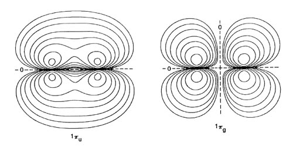
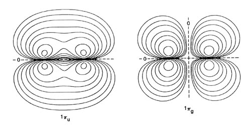

Fig. 8-8. Contour maps of the molecular orbital charge densities for O2 at the equilibrium internuclear distance of 2.282 au. Only one component of the Ipg and 1pu orbitals is shown. All the maps are for doubly-occupied orbitals with the exception of that for 1pg for which each component of the doubly-degenerate orbital contains a single electron. The nodes are indicated by dashed lines. Click here for contour values.